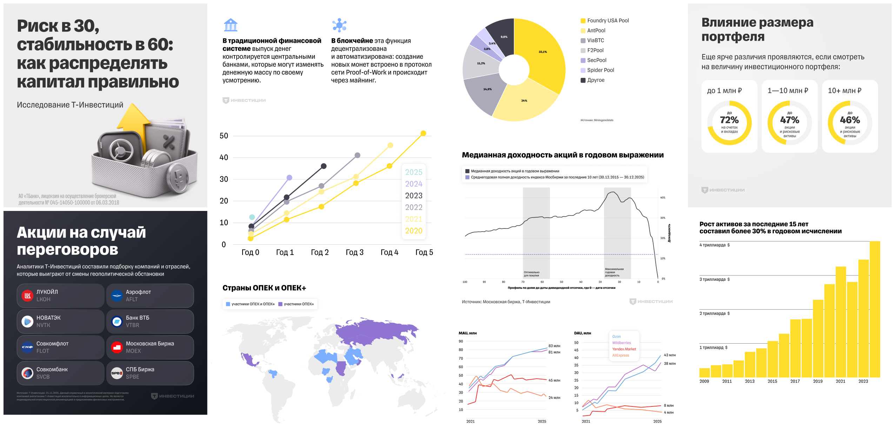
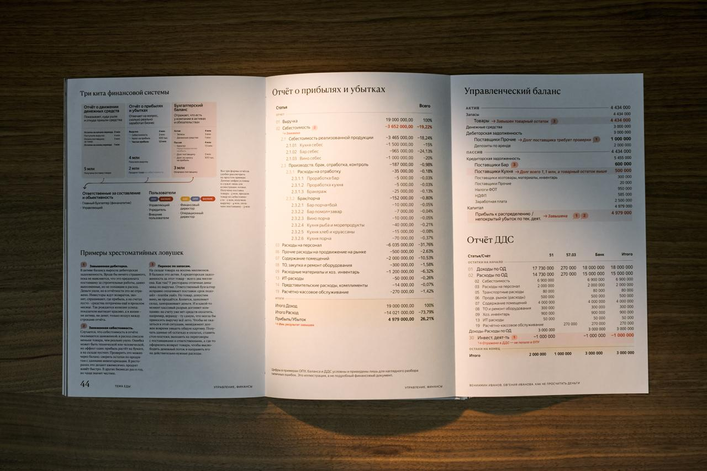
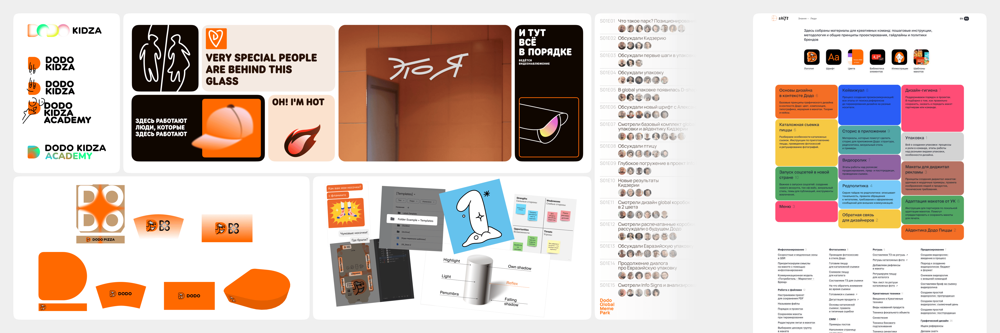
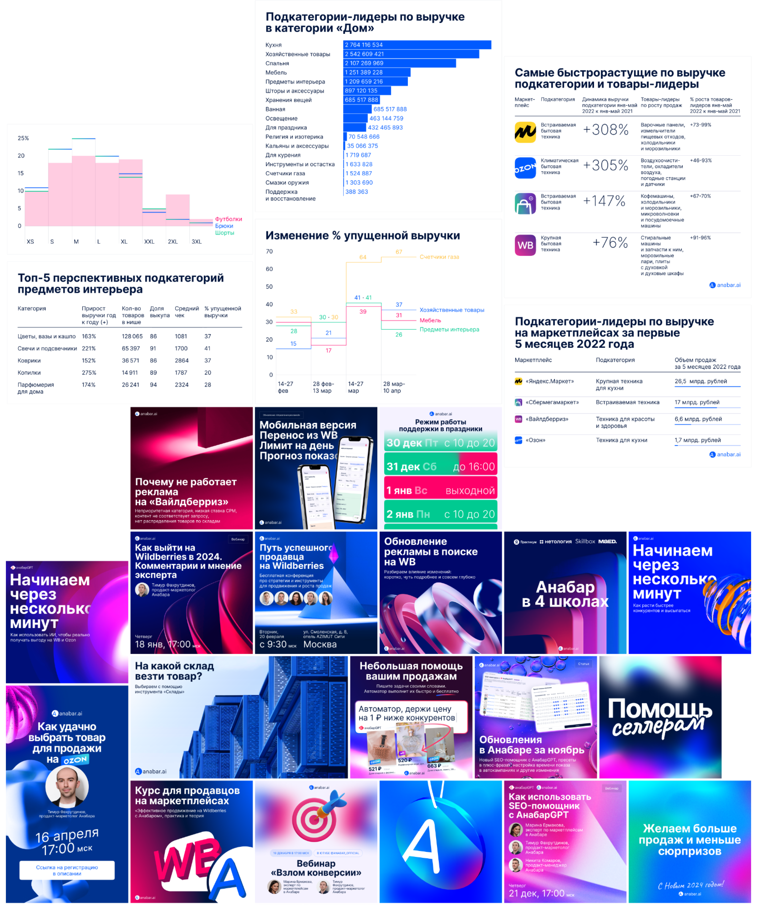
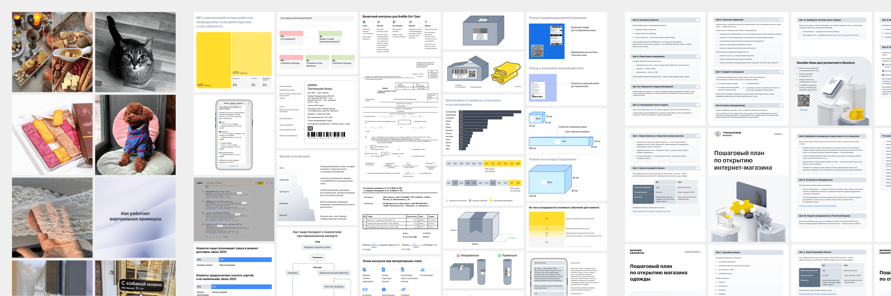
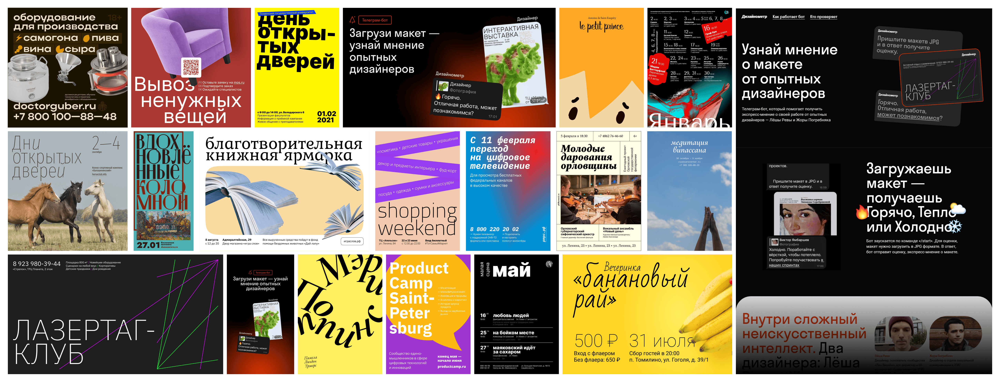
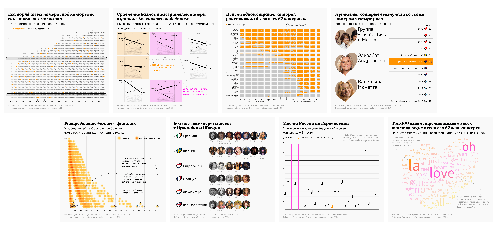

- Основной рабочий инструмент Фигма
- При необходимости могу открыть Фотошоп и Иллюстратор
- Есть опыт работы в датавраппер, флоуриш и табло
- Знаком с фронтедом и нейросетями — rusub
2025…2026
книга «это красиво, а это нет»
блог фёдора овчинникова — сила ума
2025…н.в.

2025
Журнал «Тема еда» от Яндекс Еды.
Помогал верстать схемы, инфографику и таблицы.

2023…н.в.
Шифт — сайт для креативных команд Додо Бренда. В составе дизайн-бюро «Интуиция».
Помогаю в поиске идей, референсов, смыслов для разных проектов. Собираю и готовлю изображения, видео, гифки. Верстаю гайды и спецпроекты.
Например сверстал: Логотип, Цветовые палитры, Принципы заботы, Тональность коммуникации, Редполитика.

2021…2024
Анабар — система аналитики и управления продажами на маркетплейсах.
Отвечаю за графический дизайн, в интернетах и в реальности:
- Баннеры для соцсетей и рекламы,
- Изображения для статей, вёрстка гайдов и лендингов,
- Дизайн для печати — визитки, стенды для выставок, стикеры, худи, торты,
- Дизайн презентаций и чек-листов,
- Оформление видео,
- Шаблон и поддержка почтовых рассылок,
- Оформление геткурса, помощь эйчарам и многое другое...


2021…2022
Бизнес-секреты — медиапроект для бизнеса от Банка Тинькофф (Т-Банк).
Создаю визуал для статей: схемы, таблицы, оформляю скрины и документы, готовлю обложки и шеринги. Иногда помогаю в других направлениях, например делаю чек-листы, гайды. Это как конвейер — поток задач, но конечно не без нюансов.

Редактор Олег написал отзыв о том как ему со мной работалось:
Когда я приношу какую-то задачу, ты никогда не пропадаешь и всегда все приносишь вовремя. А если задача сложная, то сначала приносишь макет. Я не помню случаев, когда я нервничал: «Где же Витя? Надо ему напомнить». Это подкупает.
Когда я иллюстрировал статью, я рисовал макеты в Фигме для тебя. Они всегда были далеки от визуального стиля Бизнес-секретов. Но если такое случалось, ты всегда находил альтернативу, которая подходила мне и стилю БС. Например, в статье про JTBD ты заменил смайлики на векторные иконки, сохранив смысл.
Минусы трудно найти. То, что мне не понравилось, относится, скорее, к процессам БС, чем к тебе. Например, мне бы хотелось, чтобы дизайнер помогал иллюстрировать статью и предлагал свои идеи. Но это невозможно, потому что у тебя было слишком много задач, а придумывание иллюстрации возложено на редактора.
2021
ЛинДизайн.
Разные интересные задачи — дизайн сайтов, баннеров, блокнота.

2018…2021
Изучение дизайна, учёба в вузе, поиск себя и умных источников, разные задачки на фрилансе.
- 2024
- Прошёл курс А. Смагина «Эстетика в графиках», Сертификат
- 2023
- Прошёл курс Школа сюжетной иллюстрации Насти Никсен
- Прочитал книгу А. Богачева «Графики, которые убеждают всех»
- Прочитал Электронную полку «Быстрый старт в искусстве»
- 2022
- Прочитал все 6 книг: Учебники бюро
- ★ Прошёл онлайновый курс «Таблицы и прочие радости»
- Сертификат Подготовительные курсы в Школу Бюро Горбунова
- 2021
- ★ Прочитал книгу Ж. Арутюнова «Сложный дизайнер»
- Прочитал книги М. Ильяхова и Л. Сарычевой: «Пиши, сокращай», «Новые правила деловой переписки», а также «Ясно, понятно»
- 2020
- ★ Прошёл курс «Design Exp». Сертификат Графдизайн
- 2019
- Прошёл курс «Дизайн взлёт». Сертификат Веб-дизайн

Высшее образование (Бакалавр)
2021 — Поволжский государственный технологический университет, Йошкар-Ола. Факультет информатики и вычислительной техники, Программная инженерия